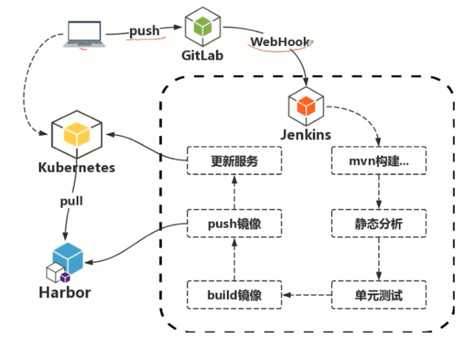
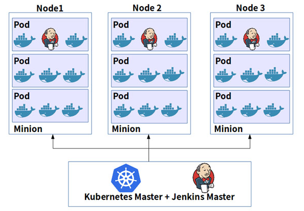
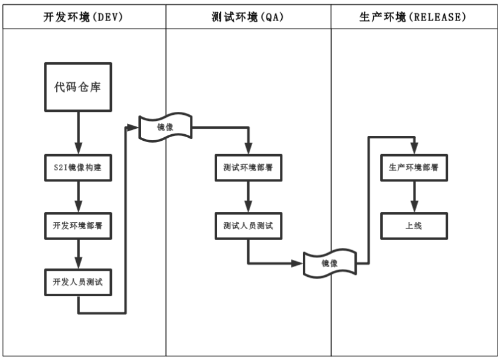

基于Kubernetes优化CI/CD
1. 现状分析与前景展望
1.1 现状分析
目前CI/CD主要运用的工具就是jenkins。通过jenkins pipeline调用虚拟机节点开展各种CI/CD任务，本质上其实只是通过jenkins调用虚拟机、运行shell或python等脚本的形式完成CI/CD的各项工作。
弊端：
- 频繁地添加虚拟机节点；
- 虚拟机节点资源利用率有高有低，造成资源分配不均。造成有些节点空闲时间太多，而有些节点比较繁忙，磁盘经常爆满；
- 打包、ut等操作过度依赖虚拟机节点的环境，环境一旦出现问题，需要人为从灾备机器复原环境
- 缺乏监控告警，往往是在CI/CD环境出现问题后才进行相关的修复工作
- 环境重建、更新、修复等操作高度耦合，更新RPM包 –> 重建、更新环境
1.2 基于K8S搭建CI/CD平台


优势：
更快速的交付和部署；更高效的虚拟化；更轻松的迁移和扩展
- 一套环境，引入所有的CI/CD工具链
- 将jenkins节点任务优化为k8s Pod、Service服务，提高CI/CD效率
- 仅在任务运行时开启pod，运行完成后销毁，最大化利用资源
- 自带负载均衡与灾备
- 通过持久化存储，更便捷地实现异地、多机等灾备方案
- 通过k8s的各类插件，实现资源监控、日志采集，通过可视化的方式查看CI/CD的各类构建，及时定位各种可能出现的风险
- 将CI/CD的产出统一化，其本质就是各类image
- 目前海河项目上层已经微服务化，这为CI/CD容器化实践提供了绝佳的契机（目前的工作重点正是基于海河上层，实现CI/CD容器化）
2. CI容器化
容器化后的CI产出分别为：code源码托管平台、ut检测、rpm包生成及构建源、海河上层项目image
产出：
- code源码托管平台：利用k8s搭建例如gitlab、gerrit等平台进行源码管理
- ut检测：针对每个项目分别制作稳定的ut检测（如tox）等image
- rpm包生成及构建源：针对每个项目，制作符合该项目rpm构建的image，以及提供源服务的image
- 海河上层项目image：将海河上层的各个微服务制作成镜像
3. CD容器化（当前重心）
底层openstack容器化难度大，暂不考虑。此处的CD容器化专指运行ansible脚本的机器容器化，以及上层服务通过容器的方式搭建

流程：
- 代码提交触发镜像构建
- 根据最新镜像更新开发环境里的相关服务
- 开发人员在此环境上进行测试
- 测试环境会根据开发人员调试过的稳定镜像创建测试环境
- 测试人员在测试环境中进行测试
- 测试通过后的稳定镜像用于release，供生产环境进行部署
产出：
- ansible部署放入容器：以前都是通过jenkins的一个节点运行ansible脚本，安装环境。一个虚拟机仅仅用来运行ansible脚本，造成资源浪费；且如果用同一个节点并行地安装多套环境，可能因为脚本问题造成彼此间的影响。通过一个ansible定制的docker镜像专门负责部署，可以节约资源。
- 海河上层容器化：通过容器化的方式部署海河上层服务，快速搭建、修复、更新开发和测试环境